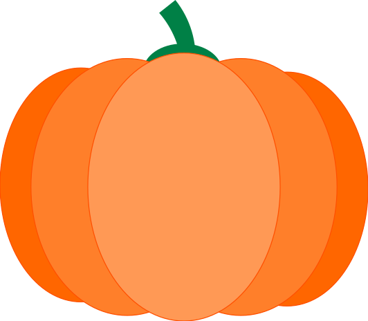
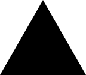
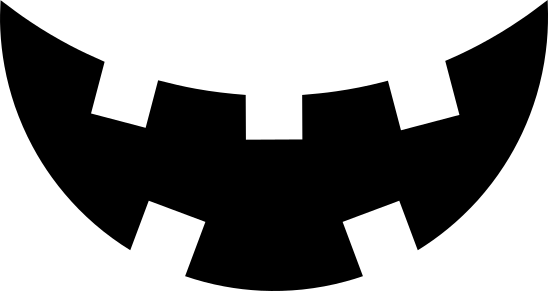

Scare me!
🦇 Jack-o'-lantern generator 🦇
Free software
Handcrafted code
No analytics, no cookies
No external resources
No frameworks, no libraries
Offline first, desktop first
Optimized for Firefox
Illustrations designed with Inkscape
Ctrl+P
your Jack and share with your friends! 👻
Designed and made with 🎃
by
Francesco Serra
in Trento, Italy.